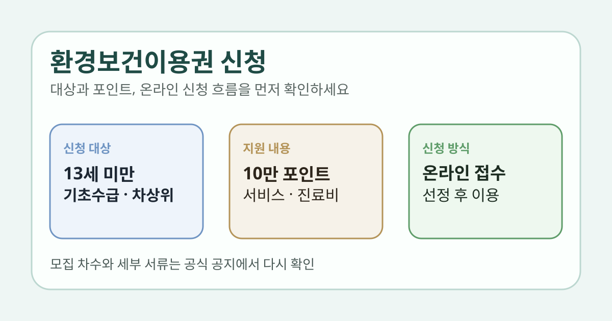

환경보건이용권 신청을 찾을 때 가장 헷갈리는 부분은 누가 대상인지, 현금처럼 쓰는 건지, 어디에서 신청하는지입니다. 이름만 보면 일반 바우처처럼 느껴지지만, 실제로는 환경성질환에 민감한 아동을 위한 지원 제도라서 대상과 사용 범위가 명확합니다.
이 글은 2026년 2월 23일 환경보건포털 모집 공지와 현재 공개된 환경보건이용권 안내 페이지, 이용자 매뉴얼을 기준으로 정리했습니다. 모집 차수와 세부 서류는 바뀔 수 있으니 신청 직전에는 공식 공지와 시스템 안내를 다시 확인하세요.

1. 환경보건이용권은 어떤 제도인가요?
환경보건포털의 현재 안내에 따르면, 환경보건이용권은 환경유해인자 노출에 민감한 취약계층 어린이에게 환경보건 서비스를 지원하는 사업입니다. 단순 쇼핑 지원이 아니라 예방용품, 실내환경 서비스, 진료비 지원, 실내환경 컨설팅까지 포함하는 구조입니다.
또 환경보건포털은 2026년도 환경보건이용권 대상자 1차 모집 안내를 2026년 2월 23일 게시했습니다. 지금 신청을 생각하고 있다면 먼저 공식 공지의 최신 모집 차수부터 확인하는 편이 좋습니다.
2. 누가 신청할 수 있나요?
현재 환경보건이용권 안내 페이지 기준 신청 대상은 기초생활수급자 또는 차상위계층의 13세 미만 어린이입니다.
또한 이용자 매뉴얼 안내에는 대리인은 19세 이상 성인, 대상자와 대리인은 주민등록등본상 동일 세대·동일 거주지 등록 조건을 확인하는 흐름이 보입니다. 실제 신청 단계에서는 법정대리인 정보와 가구 정보 확인이 필요할 수 있습니다.
3. 무엇을 지원하나요?
환경보건포털 안내에는 두 갈래 지원 구조가 나와 있습니다.
- 상품·서비스·진료비: 1인당 100,000포인트 한도
- 실내환경 컨설팅: 방문 진단과 맞춤 관리방안 제공
상품·서비스 쪽은 아토피 로션, 곰팡이 제거제 같은 예방용품이나 에어컨 청소, 매트리스 케어, 실내 공간 살균 같은 서비스에 쓸 수 있습니다. 진료비는 안내 페이지 기준 아토피성 피부염(L20), 알레르기성 비염(J30), 천식(J45), 천식지속상태(J46) 등 해당 질환 코드에 한해 포인트 범위 내 실비 지원 방식입니다.
4. 실내환경 컨설팅은 어떻게 다른가요?
실내환경 컨설팅은 단순 포인트 지급이 아니라 전문인력이 가정에 방문해 환경유해인자를 측정하고 맞춤형 관리방안을 제공하는 서비스입니다.
환경보건포털 설명에는 컨설팅 대상자 중 실내환경 개선이 시급한 250가구를 선정해 경보수 지원한다고 적혀 있습니다. 즉, 모든 가구가 바로 공사 지원까지 받는 구조로 단정하면 안 되고, 진단 이후 선정 절차를 함께 봐야 합니다.
5. 신청은 어디서 어떻게 하나요?
공식 안내 기준 신청 방법은 환경보건이용권 시스템을 통한 온라인 접수입니다. 절차는 아래 순서로 정리돼 있습니다.
- 신청서 작성 및 온라인 제출
- 신청 정보와 자격 확인
- 대상자 선정
- 선정 결과 통보
- 회원가입 후 환경보건이용권 사용
문의는 환경보건이용권 상담센터 1544-0331로 할 수 있습니다.
6. 신청 전에 확인하면 좋은 체크리스트
- 대상 아동이 13세 미만인지
- 기초생활수급자 또는 차상위계층 조건이 맞는지
- 법정대리인과 대상자의 세대 정보가 최신인지
- 포인트 사용 목적이 예방용품·서비스·진료비 중 어디에 가까운지
- 실내환경 컨설팅이 필요한지, 일반 포인트 지원이 필요한지
- 최신 모집 공지와 신청 가능 차수가 열려 있는지
한 번에 요약하면
- 환경보건이용권은 기초생활수급자 또는 차상위계층 13세 미만 어린이를 위한 제도입니다.
- 상품·서비스·진료비는 1인당 100,000포인트 한도로 안내돼 있습니다.
- 별도로 실내환경 컨설팅과 일부 가구 경보수 지원 체계가 있습니다.
- 신청은 환경보건이용권 시스템 온라인 접수로 진행합니다.
- 모집 차수와 제출 조건은 바뀔 수 있으니 최신 공지 재확인이 필요합니다.
자주 묻는 질문
Q. 현금처럼 자유롭게 쓸 수 있나요?
아닙니다. 공식 안내 기준 예방용품, 서비스, 진료비처럼 정해진 범위 안에서 포인트 방식으로 지원됩니다.
Q. 아무 어린이나 신청할 수 있나요?
그렇지 않습니다. 현재 안내 페이지 기준으로는 기초생활수급자 또는 차상위계층의 13세 미만 어린이가 대상입니다.
Q. 신청은 오프라인 방문도 되나요?
공식 안내에는 환경보건이용권 시스템을 통한 온라인 접수로 정리돼 있습니다.
공식 링크
환경보건이용권은 모집 차수, 대상 확인, 지원 범위가 바뀔 수 있습니다. 실제 신청 전에는 공식 공지와 신청 시스템의 최신 안내를 다시 확인하세요.